S15 / SKENARIO
Capstone multi-currency
Jalankan di repo turunan. Bedakan hasil demo UI dari CI, review, serta merge nyata.
Level 5LinaHendraRaniBimaSariDimasYogaIbu Maya
Durasi 25–30 menit, atau 10 menit versi eksekutif · estimasi latihan
Cerita tim
Lina bawa epik "dukung klaim dalam IDR/USD/SGD". Biasanya: Bima riset codebase seminggu, tulis 25 task larut malam, Rani coding tanpa desain, Sari review terlambat, Dimas menemukan alert setelah merge, docs tidak ter-update, partner komplain.
Yang disiapkan di repo
P15 — epik multi-currency.
Pilihan solusi

- 1 Bagi epik menjadi tugas
- 2 Setujui desain
- 3 Implementasikan di branch
- 4 Periksa CI
- 5 Review perubahan
- 6 Ambil keputusan merge
- 7 Sinkronkan docs
- 8 Periksa audit
Baca alur sebagai teks
- 1. Bagi epik menjadi tugas → meneruskan ke → 2. Setujui desain
- 2. Setujui desain → meneruskan ke → 3. Implementasikan di branch
- 3. Implementasikan di branch → meneruskan ke → 4. Periksa CI
- 4. Periksa CI → meneruskan ke → 5. Review perubahan
- 5. Review perubahan → meneruskan ke → 6. Ambil keputusan merge
- 6. Ambil keputusan merge → meneruskan ke → 7. Sinkronkan docs
- 7. Sinkronkan docs → meneruskan ke → 8. Periksa audit
Langkah demo
- Baca issue latihan dan kriteria selesai.
- Gunakan prompt atau perintah berikut. Prompt atau perintah
Bahas ADR 0002, gunakan kurs latihan, uji rounding, dan serahkan merge kepada Tech Lead. - Periksa hasil: Jalankan di repo turunan. Bedakan hasil demo UI dari CI, review, serta merge nyata.
Before / After

Belum di-capture · S15-after.png
- Baseline
- Klaim hanya IDR
- Target setelah latihan
- IDR, USD, dan SGD dengan konversi
- Verifikasi
- Jalankan di repo turunan. Bedakan hasil demo UI dari CI, review, serta merge nyata.
Manfaat untuk tim
- Dari ide ke fitur ter-merge dalam satu sesi, dengan semua gate kualitas, security, dan dokumentasi terlewati otomatis; manusia hanya di titik keputusan.
Bukti yang bisa diperiksa
- Issue GitHub · S15
S15-01-epic.png· belum di-captureS15-02-breakdown.png· belum di-captureS15-03-adr.png· belum di-captureS15-04-pr.png· belum di-captureS15-05-ci.png· belum di-captureS15-06-reviews.png· belum di-captureS15-07-merge.png· belum di-captureS15-08-docs.png· belum di-captureS15-09-audit.png· belum di-capture
Screenshot dan metrik yang tidak tersedia tidak dianggap sebagai hasil live.
Ulangi latihan
Jalankan dari root repo latihan. Reset hanya menyentuh worktree lokal yang bersih.
npm run reset